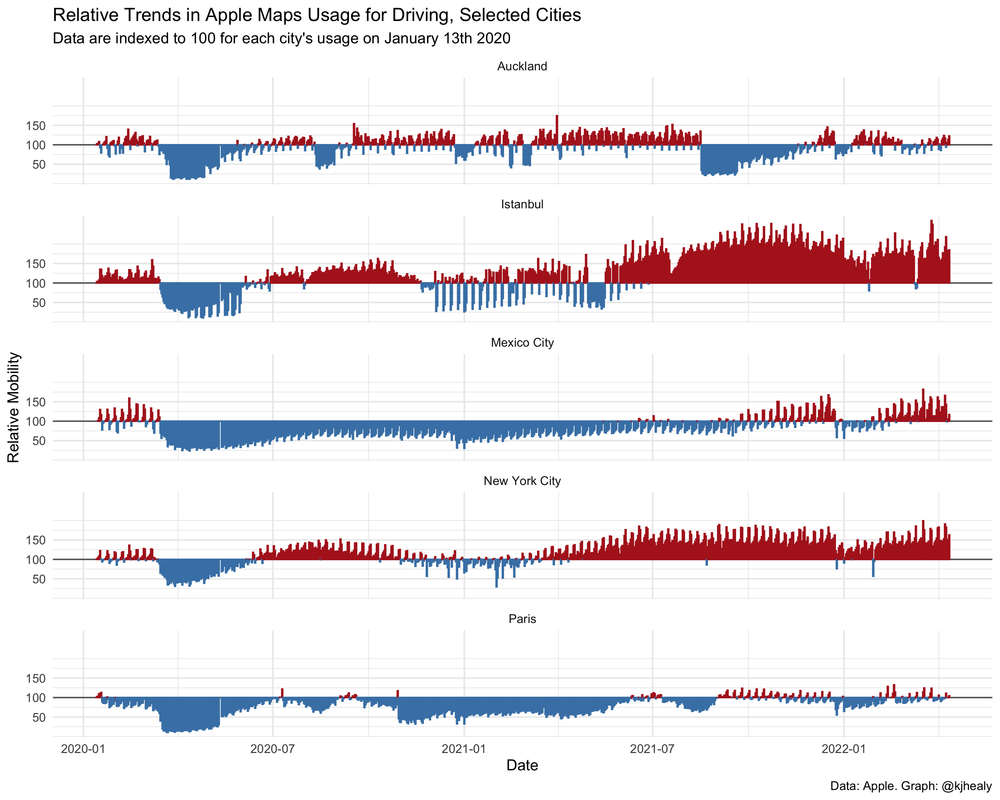

library(tidyverse)
#> ── Attaching packages ─────────────────────────────────────── tidyverse 1.3.1 ──
#> ✔ ggplot2 3.3.5 ✔ purrr 0.3.4
#> ✔ tibble 3.1.6 ✔ dplyr 1.0.8
#> ✔ tidyr 1.2.0 ✔ stringr 1.4.0
#> ✔ readr 2.1.2 ✔ forcats 0.5.1
#> ── Conflicts ────────────────────────────────────────── tidyverse_conflicts() ──
#> ✖ dplyr::filter() masks stats::filter()
#> ✖ dplyr::lag() masks stats::lag()
library(covdata)
#>
#> Attaching package: 'covdata'
#> The following object is masked from 'package:datasets':
#>
#> uspop
library(ggforce)Apple has made aggregated data available on relative trends in use of its Maps data across a range of cities, regions, and countries. Data show relative volume of directions requests per country/region or city compared to a baseline volume on January 13th, 2020. Apple defines the day as midnight-to-midnight, Pacific time. Cities represent usage in greater metropolitan areas and are stably defined during this period. In many countries/regions and cities, relative volume has increased since January 13th, consistent with normal, seasonal usage of Apple Maps. Day of week effects are important to normalize as you use this data. Data that is sent from users’ devices to the Apple Maps service is associated with random, rotating identifiers so Apple does not have a profile of individual movements and searches. Apple Maps has no demographic information about its users, and so cannot make any statements about the representativeness of its usage against the overall population.
apple_mobility
#> # A tibble: 3,743,418 × 8
#> geo_type region transportation_ty… alternative_name sub_region country
#> <chr> <chr> <chr> <chr> <chr> <chr>
#> 1 country/region Albania driving NA NA NA
#> 2 country/region Albania driving NA NA NA
#> 3 country/region Albania driving NA NA NA
#> 4 country/region Albania driving NA NA NA
#> 5 country/region Albania driving NA NA NA
#> 6 country/region Albania driving NA NA NA
#> 7 country/region Albania driving NA NA NA
#> 8 country/region Albania driving NA NA NA
#> 9 country/region Albania driving NA NA NA
#> 10 country/region Albania driving NA NA NA
#> # … with 3,743,408 more rows, and 2 more variables: date <date>, score <dbl>
vec_brks <- c(-50, 0, 50)
vec_labs <- vec_brks + 100
apple_mobility %>%
filter(geo_type == "city", transportation_type == "driving",
region %in% c("New York City", "Paris",
"Istanbul", "Auckland", "Mexico City")) %>%
mutate(over_under = score < 100,
score = score - 100) %>%
ggplot(mapping = aes(x = date, y = score,
group = region, color = over_under)) +
geom_hline(yintercept = 0, color = "gray40") +
geom_col() +
scale_y_continuous(breaks = vec_brks, labels = vec_labs) +
scale_color_manual(values = c("firebrick", "steelblue")) +
facet_wrap(~ region, ncol = 1) +
guides(color = FALSE) +
labs(x = "Date", y = "Relative Mobility", title = "Relative Trends in Apple Maps Usage for Driving, Selected Cities",
subtitle = "Data are indexed to 100 for each city's usage on January 13th 2020",
caption = "Data: Apple. Graph: @kjhealy") +
theme_minimal()
#> Warning: `guides(<scale> = FALSE)` is deprecated. Please use `guides(<scale> =
#> "none")` instead.
#> Warning: Removed 15 rows containing missing values (position_stack).
Google’s mobility reports are now available in the covmobility package.